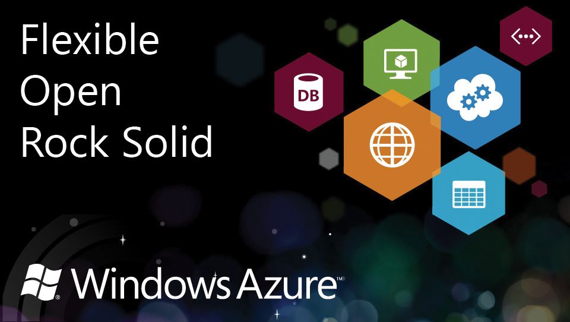

A step by step guide to click buttons on the Azure portal. We at Microsoft think you are smarter than that ;)
Unlike some other cloud company
you would need to do on linux servers to host your own webapp
Yep, you read it right.
A couple of MICROSOFT student partners are going to talk about Linux.
And we are going to use CentOS for this demo.
Go to bit.ly/azureSG
Free 3 month trial on a small instance
Go on, sign up, and spin up a server
Cos they have a bunch of awesome features
Bunch of stuff like
A moderately easy to set up stack for you to start working on something right away
After you ssh into your server
Copy your public key into the authorized_keys file
mkdir ~/.ssh
vim ~/.ssh/authorized_keys
chmod -R 700 ~/.sshAllows you to login to your server without typing in your passwords
ls ./cd ../rm -rf /mkdirtouchvimgrep blahman|ls | grep NUS>ls > filelist>>ls >> filelistCentOS/Fedora uses the yum package manager
Debian/Ubuntu uses apt-get package manager
Same purpose, just different tools on different systems
yum install app-nameyum remove app-nameyum updatesudo yum install httpd php mysql mysql-server php-mysqlServer software
In charge of responding to the browsers
Default root: /var/www/html
Manage multiple sites on a single machine using virtualhosts
chkconfig httpd onservice httpd startyour-domain.conf
<VirtualHost *:80>
ServerAdmin you@your-domain.com
DocumentRoot /users/you/your-domain.com
ServerName your-domain.com
ServerAlias www.your-domain.com
</VirtualHost>Put in in a directory and include that directory in
/etc/httpd/conf/httpd.conf
A database
Used to store data
Other databases out there include PostgreSQL, mongoDB